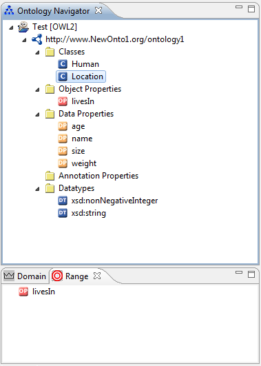
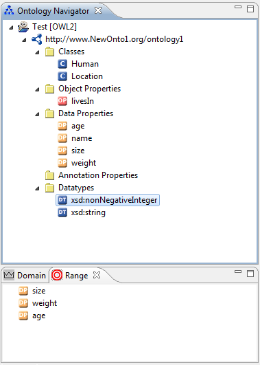

The Range View is a view of the OWL Perspective and part of the core of the NeOn Toolkit. The Range View displays all properties, which do have the selected Entity as range. This view is similar to the Domain View.
 
In the screen shot 1 the class "Location" is in the Ontology Navigator selected and the Range View displays a list of all properties, which do have the range "Location". In screen shot 2 you can see how it looks like, if you select an data type. Selecting a property from the list will display its details in the Entity Properties panel on the right part of the screen.